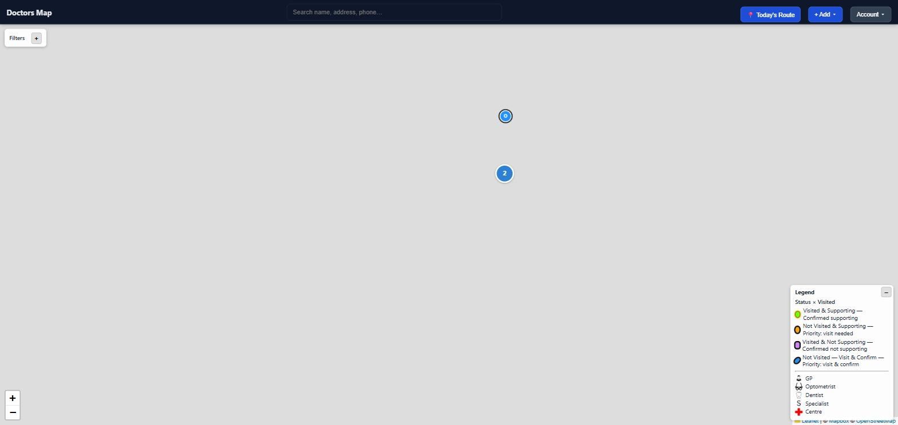

Client deployment
Multi-Tenant Agent Deployment
A self-hosted OpenClaw gateway running department-facing AI agents for two independent companies that share an office and a Slack workspace, but must never share data.
Confidential: architecture documented, no public demoThe hard part isn't giving one agent memory. It's holding two companies' worth of client and operational data on one gateway, handing slices of it to department-level agents that talk directly to teams instead of the operator, and proving, not just documenting, that a marketing agent can never read finance data.
Tenant isolation is structural: each agent's tool schema only contains the MCP prefixes for the memory palaces it's allowed to touch. A wrong-prefix call isn't rejected by a permission check an agent could argue its way around; the tool is absent from its schema, verified by direct agent-turn tests in both directions.
Jeeves, the studio-side executive assistant, is carrying real operational load right now: polling 17+ client WordPress sites for security alerts every 30 minutes and posting only what matters to Slack, plus live ClickUp task reporting. Two more department agents (Nova, Sage) are fully built and scoped, paused for team rollout.
Personal deployment
Personal Multi-Agent Stack
A self-hosted fleet of isolated agents in daily production use, including a flagship deployment for a professional cycling coach managing real athlete training data.
Confidential: architecture documented, no public demoMani, the standout deployment here, is a sports-science agent built for a professional cycling coach: it designs periodised training plans, tracks athlete performance data, and maintains a persistent per-athlete memory of form history, injury flags, and PB records. Real athletes, real training outcomes, not a demo.
Every agent gets a physically isolated memory palace: zero shared state between Lysander (primary), Mani (sports science), and Scully (family support), enforced by palace-prefix lockdown at the tool-schema level, the same isolation mechanism used on the client deployment above.
The memory system underneath, MemPalace, hits 96.6% recall on LongMemEval (a published top score for this kind of semantic-search-plus-knowledge-graph architecture), running entirely on self-hosted infrastructure with zero cloud dependency for execution.
Field-sales platform
Meridian Doctors Map
Field-sales mapping platform built for a healthcare distribution network's rep team.
Live demo: sanitized rebuild, no real client dataAn interactive map giving field reps and managers a live view of doctors, medical centres, and daily visit activity across regional sales territories, with automated daily reports on visits and data changes so nobody has to compile them by hand.
Ships across three platform surfaces from one backend: the desktop map, an installable mobile PWA for reps in the field (works offline, dedupes queued visit logs server-side), and a React Native companion app.
Bulk doctor imports handle 20+ spreadsheet column-name variants, fuzzy-match duplicates, and batch-geocode through a three-provider fallback chain, the same chain used for interactive single-address lookups.
Open live demo ↗admin / password1232FA is a real, implemented feature; the setup screen is genuine. In this demo it accepts any 6-digit code, so you don't need an authenticator app to look around.

Market dashboard
MarketPulse
Daily market-briefing dashboard built for a financial advisory practice, with automated Telegram delivery.
Live demo: sanitized rebuild, no real client dataWhat used to be a manual copy-paste-and-format routine across half a dozen browser tabs is now a single-page workflow: pull fresh index, forex, and commodity data plus region-specific news, review AI-generated summaries, and send a formatted daily briefing to a Telegram channel with one click.
Went through two full generations: a single-file Flask prototype built to prove the workflow fast, then a full React + Express rewrite with a real database, token-based auth, and a test suite, without changing anything about how advisors actually use it day to day.
Access tokens are short-lived and refresh tokens are revocable server-side by hash, so a compromised token can be killed without waiting for it to expire.
Open live demo ↗demo / DemoPass123!Same real 2FA flow as above; any 6-digit code works in this demo.

Security tooling
Charlie Dashboard
Threat-intel and competitive-radar tool built for a cybersecurity vendor's sales and content teams.
Live demo: frontend-only, read-only sandboxScrapes cybersecurity RSS feeds, AI-summarizes the news, and runs a "Competitor Radar" against named rival companies' public sites, plus an AI content studio and a lightweight outreach CRM, all behind mandatory 2FA in production.
The real system runs on a Fastify + PostgreSQL backend with argon2 password hashing and WebAuthn support. This public demo is frontend-only: no live database, scraping, or AI calls anywhere in the loop. It boots straight into a read-only session against static fixtures.
Open live demo ↗
Client site, self-managed
HillSkills.co.za
Built, hosted, and still managed end-to-end for my brother's mountain-bike coaching business.
Live: real production site, no sanitization neededFull ownership, start to finish: brand identity, page design, frontend build, a PHP contact backend sending through Microsoft Graph with honeypot spam protection, and the hosting and DNS keeping it live today at hillskills.co.za.
This is the one project on this page that isn't a rebuild or a sanitized rebuild of client work. It's the real, currently-running site, still maintained by me.
Visit hillskills.co.za ↗